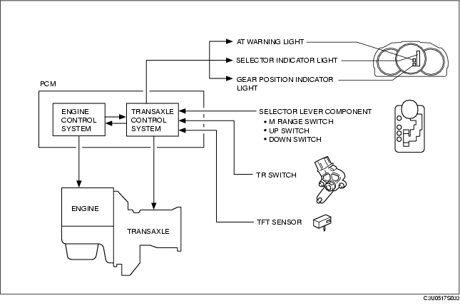

Manual mode shift control structure (sport AT) [FN4A-EL]
Features
• The manual mode shift control is activated by moving the selector lever from the D to M range position (selector lever is shifted over toward driver side).
• Manual mode shift control with a manual shifting system allowing selection of gear positions by manual operation of the selector lever forward (-) and back (+) has been adopted. Moreover, engine braking for all gears in manual mode according to the gear ratio is available.
- - Shifting between 1GR and 2GR when the vehicle is stopped is possible. Moreover, when shifting from the D to M range while driving, the same gear position is maintained.
- - Consecutive shifting in the M range has been adopted. When shifting down from M range 4GR or 3GR, and shifting up from M range 1GR or 2GR, one gear can be skipped over by rapidly tapping the selector lever two times in the down-shift (-) direction or up-shift (+) direction.
• Selector lever position and gear position indicator lights, built into the instrument cluster, have been adopted. The gear position indicator light displays the selected gear position.
- - The selector indicator light includes a selector lever position indicator that displays selector lever positions and, a gear position indicator light that displays gear positions.
Structure
System diagram
